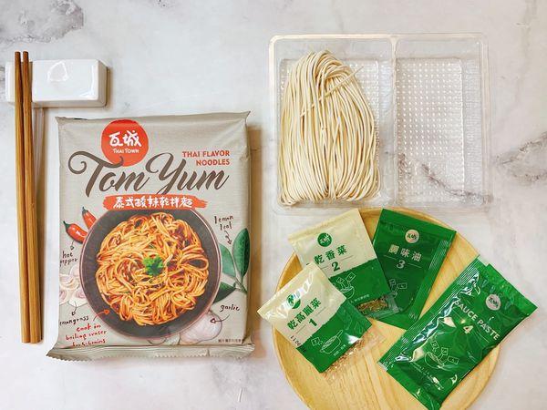
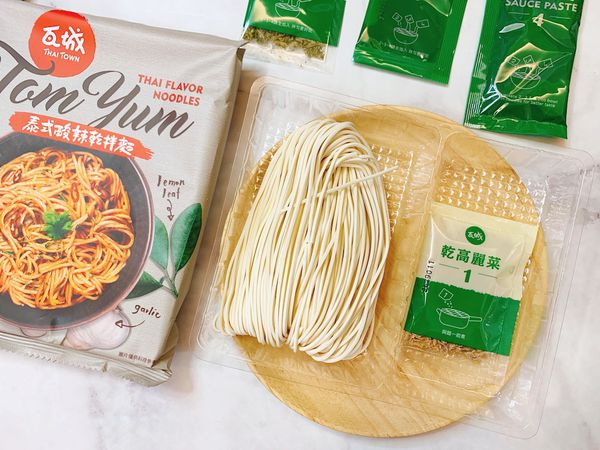
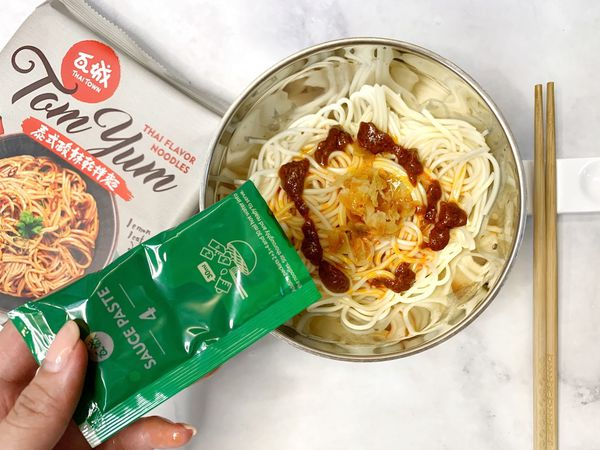
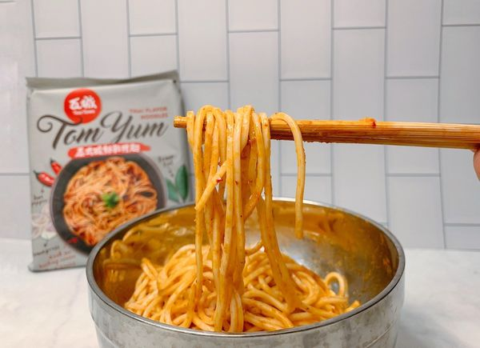
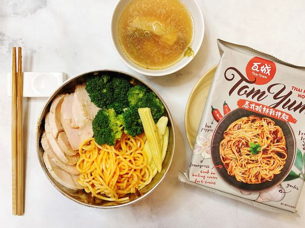
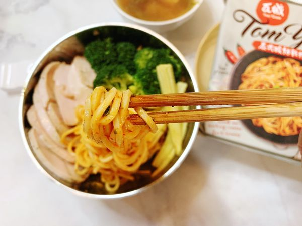

?<html>
<head>

<title>第4頁</title>

</head>

<body>
<h1>瓦城其他品介紹(泰式酸辣乾拌麵)</h1>

採用獨家泰式新鮮香料,以及純手工製的關廟細麵條,調味方式簡單,<br>

吃完又有飽足感,即使是主打6分鐘內上桌的泰式酸辣乾拌麵，也不馬虎的配上了4包配料與醬包！<br>

分別是：<br>


1. 乾高麗菜 2.乾香菜 3.調味油 4.酸辣醬<br>


除了每一包感覺份量都很足之外，也很貼心的在包裝上大大的標示了使用順序，讓整個料理過程更簡單快速！<p>

<hr>















<iframe width="560" height="315" src="https://www.youtube.com/embed/sx45kT0kgnc" frameborder="0" allow="accelerometer; autoplay; encrypted-media; gyroscope; picture-in-picture" allowfullscreen></iframe>
<p>

<a href ="index.html">連到首頁</a>

<a href ="2nd.html">連到第2頁</a>

<a href ="3rd.html">連到第3頁</a>

<a href ="5th.html">連到第5頁</a>


</body>

</html>


